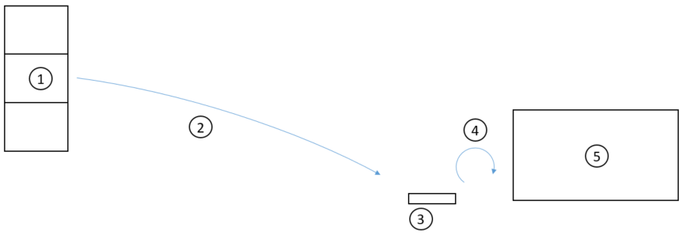

Materialverbrauch mithilfe eines mobilen Geräts registrieren
Important
Dynamics 365 for Finance and Operations hat sich zu speziell entwickelten Anwendungen entwickelt, mit denen Sie bestimmte Geschäftsfunktionen verwalten können. Weitere Informationen zu diesen Änderungen finden Sie im Dynamics 365-Lizenzierungshandbuch.
In diesem Thema wird ein Workflow beschrieben, der die Erfassung des Rohmaterialverbrauchs in der Produktion verwendet, indem eine mobiles Gerät verwendet wird.
Einführung
Dieser Workflow ist relevant, wenn es eine stringente Anforderung für die Nachweisbarkeit gibt. In diesen Fällen muss die exakte Zeit und die Menge für den der Verbrauch gemeldet werden, um die Nachweisbarkeit der Materialien zu gewährleisten. Dieser Prozess kann im Vergleich zu den vor- oder Arbeitsgängen Rückfluss angezeigt werden, in denen ein Gegenkonto zwischen dem Zeitpunkt der Erfassung und dem Zeitpunkt vorhanden ist, ab der tatsächliche Verbrauch erfolgt. Dies erläutert, weshalb eine Strategie des automatischen Verbrauch für einige Materialien mit Nachweisbarkeitsanforderungen nicht verwendet werden kann. Wir schauen ein einfaches Szenario an, das erklärt, wie Sie einen Workflow einrichten, um die Erfassung des Rohmaterialverbrauchs in der Produktion mithilfe einem mobilen Gerät zu aktivieren. 
{kind=link}
Szenariodetails
Ein fortlaufender Produktionsrozess (5) verbraucht das Rohmaterial in der RM-100. Das Material ist am Lagerplatz Bulk-001 (1) beim (1) PL-Kennzeichen mit zwei Chargen, B1 und, B2, für eine Menge von 100 Kilogramm verfügbar. Lagerortarbeit (2) ist für RM-100 freigegeben und verarbeitet, und das Material ist von dem Bulk-001 Produktionseingangslagerplatzes (3) PIL-01 entnommen, der al ein nicht von einem Ladungsträger gesteuerter Lagerplatz definiert ist. Der Bediener wiegt Material vom Produktionseingangsstandort (3) aus und erfasst das Gewicht und die Chargennummer entspredhend dem Verbrauch (4). Über einen Produktionseingangslagerplatz wird ein Teil des Materials manuell dem Produktionsprozess in festgelegten Zeitintervallen hinzugefügt. Wenn Bediener Material hinzufügt, wird dieses auf einer Waage gewogen und die Chargennummer wird erfasst.
Einrichten des Workflows, um den Verbrauchs unter Verwenden eines tragbaren Geräts mit laufender Erfassung zu erfassen
Erstellen Sie ein Endproduktprodukt, FG-100, mit einer Stückliste, die das Chargen kontrollierte Rohmaterial RM-100 hat. Fügen Sie zwei Chargen, B1 und B2 von RM-100 in einer Menge von 100 dem Lagerplatz hinzu: Bulk-001 mit Kennzeichnungsplatte: PL-1. Das Stücklisten-Bezugsprinzip für die Stücklistenposition für RM-100 wird auf Manuell festgelegt. Der Produktions-Wareneingang wird auf PIL-01 gesetzt. Sie können das tun, indem Sie diesen Speicherort als den Standardproduktionswareneingangs-Lagerplatz auf Lagerort 51 auswählen.
- Erstellen eines neuen Menüelements für ein mobiles Geräts:
- Menüartikelname - Materialverbrauch registrieren.
- Titel – Materialverbrauch registrieren.
- Modus - Indirekt.
- Aktivitätscode - Erfassen des tatsächlichen Materialverbrauchs.
- Menüartikel Gerätemenü Produktion Mobile hinzufügen.
- Wählen Sie diese Option aus, um einen Produktionsauftrag für ein fertiges Produkt zu erstellen.
- Artikelnummer - FG-100
- Standort - 5
- Lagerort - 51
- Menge - 150
Der Produktionsauftrag ist Vorkalkuliert und Freigegeben und Lagerortarbeit wird erstellt.
- Schließen Sie die Arbeit unter Verwendung des Workflows für Rohmaterialentnahme für das tragbaren Gerät aus.
Dadurch wird das Material vom Sammellagerplatz zum Lagerplatz für Produktions-Wareneingang PIL-01 verschoben. Nachdem die Arbeit abgeschlossen wurde, verfügt das Material den Status Entnommen dem Produktionseingangslagerplatz. Der Status nach der Arbeit wird entweder als Entnommen oder Physisch reserviert verarbeitet. Diese wird mit dem Parameter Status, nachdem es auf dem Lagerhausformular erfasst wurde konfiguriert.
- Startet den Produktionsauftrag entweder vom Client oder dem tragbaren Gerät, indem Sie Produktionsanfang verwenden.
Nachdem der Produktionsauftrag gestartet wurde, können Sie mit Materialentnahme den Workflow zum tragbaren Gerät erfassen. Beginnen wir damit, indem wir den Verbrauch von 25 Kilogramm von Charge B1 erfassen.
- Wählen Sie die Menüoption Erfassen Sie Material Verbrauch im Menü für das tragbaren Gerät aus, geben Sie die folgenden Details ein:
- Die Produktionsauftragsnummer.
- Der Lagerplatz, an dem das Material verbraucht wird, in diesem Fall PIL-01.
- Artikelnummer RM-100.
- Chargennummer B1.
- Eine Menge von 25.
- Wählen Sie OK.
Beachten Sie, dass die Meldung "Erfassungsposition" auf der Anzeige erscheint. Auf dem Produktionsauftrag liegt eine offene Erfassung vom Typ Produktionskommissionierliste für Artikelnummer RM-100 und Chargennummer B1 vor.
Sie können nun entscheiden, ob die Sie Erfassung fortzusetzen, beispielsweise auf Chargennummer B2 und jedes Mal wenn Sie OK. auswählen, wird eine neue Erfassungsposition der offenen Erfassung hinzugefügt.
Nachdem Sie Ihre Erfassung abgeschlossen haben, wählen Sie Fertig, um die Erfassung zu buchen und der Workflow zu beenden.
Zusätzliche Kommentare
- Wenn ein Benutzer den Workflow storniert, nachdem eine Erfassungsposition erstellt wurde, ist die Erfassung ungebucht, aber wenn der Benutzer zu einem späteren Zeitpunkt des Workflows für denselben Produktionsauftrag verwendet, dann werden die Positionen der offenen Erfassung hinzugefügt anstatt einer neuen Erfassung hinzuzufügen.
- Der neue Workflow unterstützt auch die Erfassung von Seriennummern.
- Es ist nur möglich, eine Artikelnummer zu erfassen, die in der Stückliste oder in der Formel für den ausgewählten Produktionsauftrag oder den Chargenauftrag definiert wird.
- Material kann bereits verbraucht sein. Wenn beispielsweise das Material mit einem Mengenverbrauch von 100 Kilogramm geschätzt wird, dann kann es mit einer Menge von beispielsweise 105 kg bereits verbraucht sein.